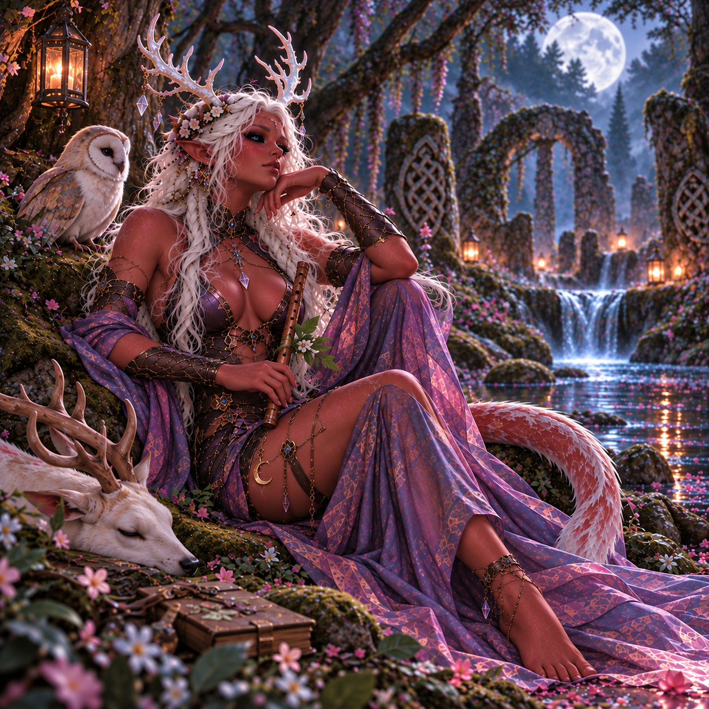

Rose Rime
"The Frosted Rose"
She speaks softly, as if the world might bruise under too much volume, her words often laced with a dry, cutting sarcasm that keeps others just far enough away. Beneath that guarded edge, however, lives a quiet, unwavering compassion—most evident in the way animals seem to trust her without question, as though they recognize something kindred in her spirit. She moves through life with a strange, haunting beauty, the kind that lingers in the mind long after she’s gone, equal parts enchanting and unsettling.
Though gentle and mild in demeanor, she is not without fault; impulse often guides her steps before reason can intervene. And when her carefully held composure finally fractures, the shift is unmistakable—her calm gives way to a fierce, unrelenting fury, swift and consuming as a storm breaking at sea.
Character Details
Character Name: Rose Rime
Stage Name: The Frosted Rose
Species: Chthonic Tiefling
Hails From: The Moonshae Isles
Background: Moonwell Pilgrim
Character Level: 4
Class:
Druid: Circle of the Moon
Bard: College of Dance
Bard: College of Dance
Alignment: Chaotic Good
Diety Worshipped: Earthmother
Download Character Sheet
Backstory
Rose Rime was born beneath the mist-laced skies of the Moonshae Isles, her pink-red skin and frost-white hair marking her as something both beautiful and otherworldly from the start. Among a people who revered the land and its ancient spirits, she found belonging not in others, but in the quiet presence of the wild. Animals trusted her without question, and the sacred moonwells—those shimmering fonts of divine magic—seemed to hum in recognition when she drew near.
As a pilgrim of the moonwells, Rose wandered far beyond the comfort of home. She painted the rolling coasts and silver forests, collected folk songs that clung to the wind, and learned to weave primal magic into her voice and form. It was during these travels that her gift for transformation bloomed—her druidic wild shape blending seamlessly with a bard’s sense of rhythm and performance. In those moments, she became something hauntingly beautiful: ice forming at her fingertips, petals spiraling through the air, her body shifting with an almost sacred grace.
But beauty, especially the kind that unsettles, does not go unnoticed.
She was taken—sold into a traveling carnival where wonder was bought and cruelty hidden behind velvet curtains. There, she became The Frosted Rose. Forced to perform, she danced beneath lanternlight, transforming in bursts of frost and drifting petals, her movements soft and mesmerizing. Crowds called her enchanting, majestic… divine. They never saw the chains behind the curtain, nor the quiet fury building beneath her gentle exterior.
The experience left its mark. Her voice grew softer, her sarcasm sharper—a shield to keep others at a distance. Yet her compassion endured, especially for creatures without a voice of their own. When she finally broke free, it was not with spectacle, but with a storm—her calm fracturing into something fierce and unstoppable.
In the years that followed, whispers of the Cult of the Absolute reached her—whispers that stirred something deep and unsettled within. She knows, in the way one knows a scar without remembering the wound, that she was once among their victims. But the memory itself is fractured, indistinct—like frost clouding glass. What remains is not clarity, but feeling: unease, quiet anger, and the lingering sense that something was taken from her.
Now, word spreads that former cultists are gathering near Neverwinter.
Rose Rime does not believe in coincidence.
She cannot say why the news unsettles her so deeply—only that it does. And so, guided more by instinct than memory, she takes up her pennywhistle and her magic and sets her path toward the city, drawn by a quiet, unresolved pull. Whether she seeks answers, vengeance, or something long buried within herself, even she does not know.